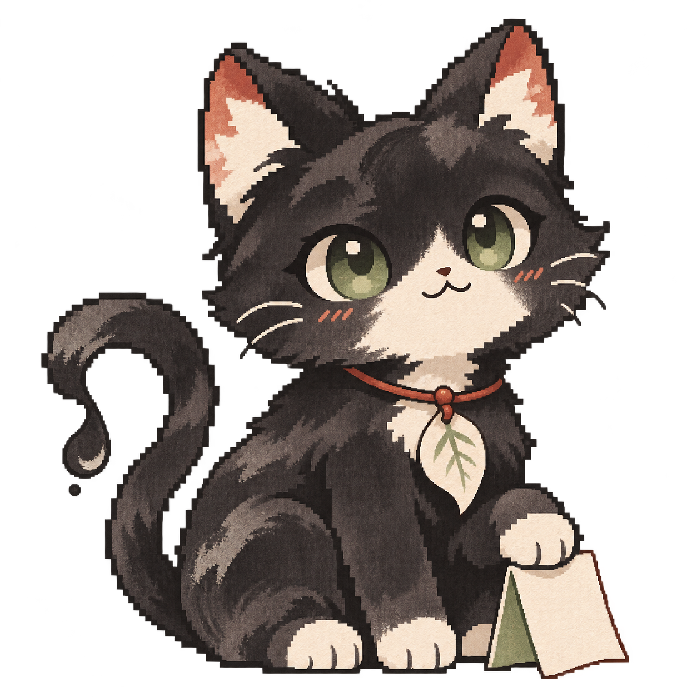

Inkstone 砚台
LOCAL MARKDOWN · EVIDENCE-BASED Q&A
Your notes.
Answers with
sources.
Write on your Mac. Bring your own API.
Keep an optional ink companion nearby.
macOS · Apple SiliconApache-2.0 source

Synthetic UI demonstration · static companion artwork